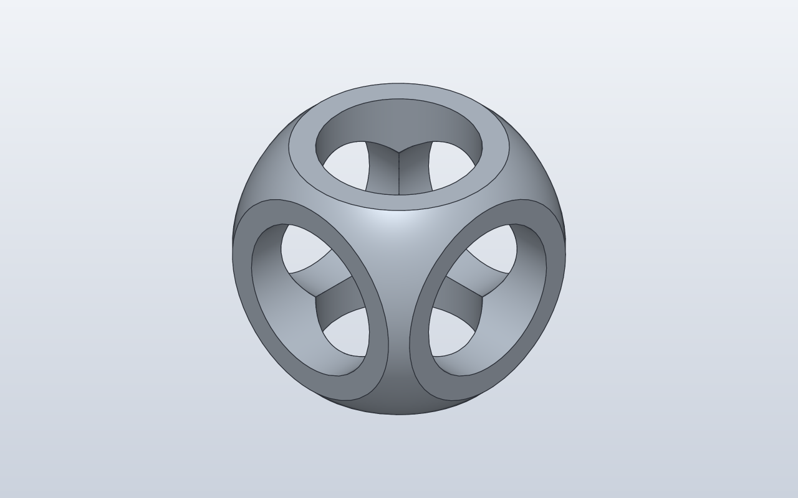

Model preview

Native SolidCraft image, matching this source revision.
A constructive solid geometry demonstration: intersect a cube with a sphere, then subtract cylinders along three axes.
Files
Download the source and the generated command plan.
Command JSON describes CAD actions; it is not an already-saved .sc design.
Construction stages
- Create the sphere
- Intersect with a cube
- Cut along X, Y and Z
Python model
@dataclass
class CsgCube:
size: float = 50
def build(self):
body = Sphere(self.size / 1.5) & Box(self.size, self.size, self.size)
holes = Cylinder(d=self.size / 1.5, h=self.size).orient(X, Y, Z)
body - holes
CsgCube()
Native SolidCraft command sequence
- Named CAD parameterparameters.add · name: size
{ "command": "parameters.add", "params": { "name": "size", "expression": "50", "unit": "mm" } } - Sphere primitivesolid.sphere · operation: new, body_name: CsgCube
{ "command": "solid.sphere", "params": { "radius": "size / 1.5", "center": [ 0, 0, 0 ], "operation": "new", "body_name": "CsgCube" } } - Box primitivesolid.box · operation: intersect
{ "command": "solid.box", "params": { "length": "size", "width": "size", "height": "size", "center": [ 0, 0, 0 ], "operation": "intersect", "targets": [ "CsgCube" ] } } - Cylinder primitivesolid.cylinder · operation: cut
{ "command": "solid.cylinder", "params": { "height": "size", "diameter": "size / 1.5", "base": [ "-(size) / 2", 0, 0 ], "axis": "X", "operation": "cut", "targets": [ "CsgCube" ] } } - Cylinder primitivesolid.cylinder · operation: cut
{ "command": "solid.cylinder", "params": { "height": "size", "diameter": "size / 1.5", "base": [ 0, "-(size) / 2", 0 ], "axis": "Y", "operation": "cut", "targets": [ "CsgCube" ] } } - Cylinder primitivesolid.cylinder · operation: cut
{ "command": "solid.cylinder", "params": { "height": "size", "diameter": "size / 1.5", "base": [ 0, 0, "-(size) / 2" ], "axis": "Z", "operation": "cut", "targets": [ "CsgCube" ] } }
Verification: Native verified · snapshot from matching run.
The source and JSON here are from this checkout. A matching native snapshot appears only after successful SolidCraft verification.
Native qualification is reported only when the matching verified image exists.